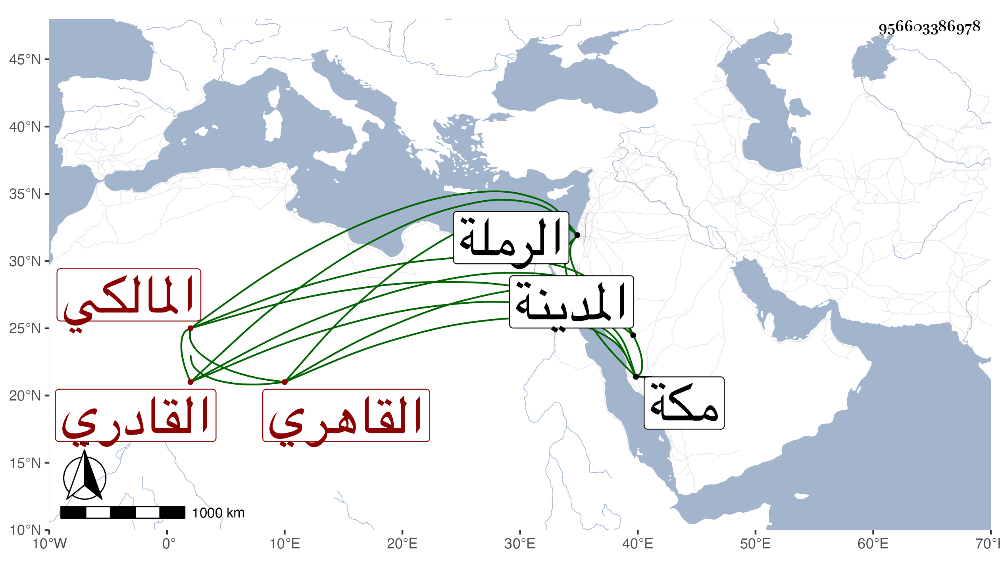

0902Sakhawi.DawLamic.ITO20230111-ara1.EIS1600.956603386978
Biography ID: 956603386978
1314
يونس بن محمد بن خجا بردى القاهري القادري المالكي الماضي جده كان كل من جده ثم أبيه حنفياص فولد له هذا في شوال سنة اثنتين وستين وثمانمائة ونشأ في كنف أبيه وجده بزاويته التي بقرب مضارب الخيم من الرملة وكان مؤدبه مالكيا فأقرأه في الرسالة وغيرها وقرأ على المحيوي بن تقي وقاضي الجماعة المغربي قليلا ، وحج مع جده قبل بلوغه ثم بعد ذلك حين إقامة أبيه بمكة مدة ثمان سنين وتكرر له ذلك ليجتمع له مع الحج زيارة أبيه ، وفي غضون ذلك وسع الزاوية المشار إليها وعمل لها منارا ومكتبا للأيتام وسبيلا وغير ذلك كقبتين على قبري جده وشيخه إينال كل هذا بإشارة الشيخ عبد القادر الطشطوخي أحد المعتقدين ، وحج أيضا في سنة ثمان وتسعين وجاور التي تليها واجتمع بي حينئذ فسمع مني المسلسل وغيره وكتب القول البديع وأحضر لي محضرا كتبت له الإجازة فيه وألبسته الخرقة الصوفية وأذنت له ، وعنده أدب وفي رائحة الخير بارك الله فيه ولم يلبث أن جاء الخبر بموت شيخ القادرية فانزعج كثيرا وانقطع عليه ، ثم سافر إلى المدينة النبوية أحسن الله رجوعه ، وأبوه إلى الآن في الأحياء .
